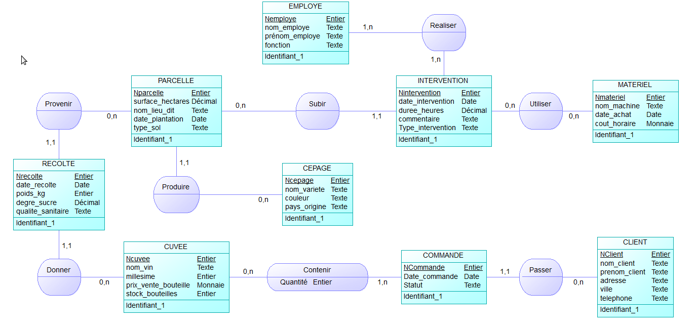

Contact
Gérer des données de l'information — Modélisation conceptuelle (MCD) et implémentation d'une base de données relationnelle pour la gestion d'une exploitation viticole.
Voir le code
La SAÉ 1.04 introduit la compétence de gestion des données, centrale dans tout système d'information moderne. Le contexte applicatif est un domaine viticole : à partir d'un cahier des charges fourni, il s'agit de modéliser puis d'implémenter une base de données capable de gérer l'ensemble de ses informations opérationnelles — parcelles, cépages, étapes de vinification, gestion des stocks, ventes et personnel.
La première étape du projet est analytique : identifier toutes les entités du domaine (ce qui existe concrètement dans l'exploitation), toutes les associations (ce qui les relie), leurs attributs respectifs et les cardinalités de chaque relation. Ce travail rigoureux aboutit au Modèle Conceptuel de Données (MCD), réalisé avec le logiciel PowerAMC. Chaque choix de cardinalité doit être justifié par des exemples concrets issus du cahier des charges.
La seconde étape est l'implémentation : dériver le MCD en Modèle Logique Relationnel (MLR), c'est-à-dire définir les tables relationnelles, leurs clés primaires et leurs clés étrangères, puis créer la base effective sous Microsoft Access. J'ai ensuite rédigé des requêtes SQL pour répondre à des questions métier précises (production par cépage, stock disponible, chiffre d'affaires par client) et créé des formulaires utilisateurs facilitant la saisie des données.
Ce projet a été réalisé en binôme avec Baptiste MORIN (groupe B). La répartition des tâches a suivi une logique de complémentarité : analyse conjointe du cahier des charges, modélisation séparée sur des sous-domaines puis fusion et révision commune du MCD. L'implémentation Access a ensuite été réalisée ensemble pour garantir la cohérence des relations entre tables.
La SAÉ 1.04 m'a révélé un aspect de l'informatique que je méconnaissais : la modélisation et la gestion des données. Avant ce projet, je n'avais aucune idée de ce que représentait vraiment une base de données relationnelle ni pourquoi la phase de modélisation était si importante. Cette SAÉ a répondu à ces deux questions de façon concrète et durable.
La partie MCD a été la plus exigeante intellectuellement. Choisir les bonnes cardinalités n'est pas trivial : chaque relation doit être confrontée à des exemples réels pour valider son sens. Nous avons révisé notre modèle plusieurs fois après avoir simulé des scénarios d'usage que nous n'avions pas anticipés initialement. Ce processus itératif m'a appris la valeur de la phase d'analyse en amont de tout développement.
La rédaction de requêtes SQL a été une révélation. L'approche déclarative — énoncer ce qu'on veut obtenir plutôt que comment l'obtenir — est très différente de la programmation procédurale en Java. Construire une requête avec des jointures multiples et des agrégations pour extraire exactement l'information voulue procure une vraie satisfaction intellectuelle.
Depuis cette SAÉ, je réfléchis systématiquement en termes de modèle de données dès que j'aborde un nouveau problème applicatif. C'est un réflexe que j'estime fondamental pour tout développeur souhaitant concevoir des systèmes robustes et maintenables.